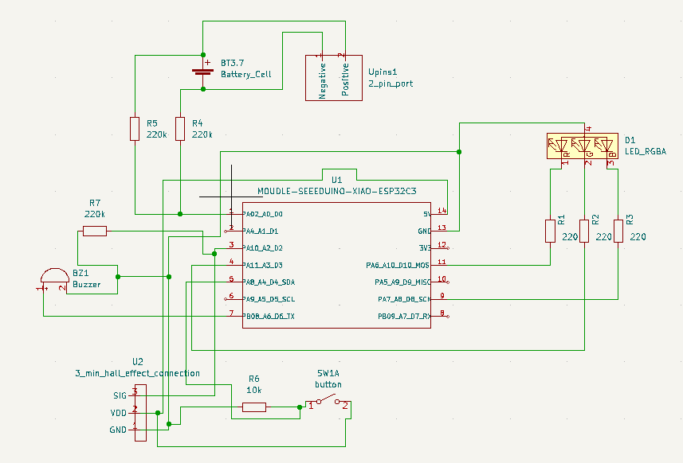

Kestrel Sensor
A sensor used to monitor elderly people in a transparent and unobtrusive way.

My grandmother lives alone, so I developed a system to unobtrusively monitor her well-being. The system consists of a network of motion sensors placed in key doorways throughout the house, tracking daily activity. A custom PCB, designed in KiCad, processes the sensor data and sends it to a backend server hosted on AWS. Family members can access this information through a SwiftUI iOS app, which also sends alerts if no movement is detected for an extended period.


Building this system required learning several new skills. I designed and manufactured the PCB, developed an API for handling sensor data, and built an iOS app from scratch. Since many aspects of the project, such as backend development and UI design, were new to me, progress was often slow. However, working on my own timeline allowed me to take the time to learn each component properly and implement them effectively.


Four custom PCBs were designed in KiCad — a main processing board and three sensor boards for detecting door magnet states. Two versions were iterated, reducing board size significantly from V1 to V2.




The first version established the core concept and architecture. Hardware was rougher and the enclosure less refined, but the full sensor-to-app pipeline worked end to end.


After six months of development, I created a fully functional IoT prototype integrating hardware, software, and cloud services. The project not only helped me build a real-world solution but also reinforced my ability to manage a full-stack system independently, troubleshoot technical challenges, and rapidly learn new technologies.